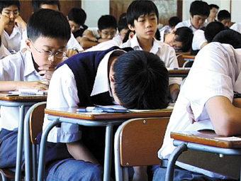

DVC's Schedule and the Average Student's Day
Monday
Office Hours~ 7:50-8:45
Period 1~ 8:50-10:35
Period 2~ 10:40-12:25
Lunch~ 12:25-12:55
Period 3~ 1:00-2:45
Seminar 7~ 2:50-3:45
Tuesday
Office Hours~ 7:50-8:45
Period 1~ 8:50-10:35
Period 2~ 10:40-12:25
Lunch~ 12:25-12:55
Period 3~ 1:00-2:45
Seminar 7~ 2:50-3:45
Wednesday
Office Hours~ 7:50-8:45
Period 1~ 8:50-10:25
Period 2~ 10:30-12:05
Advisory~ 12:10-12:35
Lunch~ 12:35-1:05
Period 3~ 1:10-2:45
Seminar 7~ 2:50-3:45
Thursday
Office Hours~ 7:50-8:45
Period 1~ 8:50-10:25
Period 2~ 10:30-12:05
Advisory~ 12:10-12:35
Lunch~ 12:35-1:05
Period 3~ 1:10-2:45
Seminar 7~ 2:50-3:45
Friday
Advisory/CD~ 9:50-10:35
Period 1~ 10:40-12:10
Lunch~ 12:10-12:40
Period 2~ 12:45-2:15
Period 3~ 2:20-3:45
A Student's Average Day at School in America
According to the CDC (Center for Disease Control and Prevention), there are approximately 39,700 public schools in America.
On average, these schools started at 8:03 am.
According to US Human Health & Services, Adolescents spend 8.6 hours sleeping on a weeknight.
They spend, on average, 6.8 hours on education every weekday.
Adolescents only get 1.4 hours, on average, to spend on leisure.
They only spend about an hour eating or drinking.
Sports take up approximately 0.7 hours of the average adolescent's day.
Adolescents spend an average of 0.9 hours on grooming a day.
Religious activities only make up a tiny average of 0.1 hours per day.
Working/volunteering takes up an average 0.5 hours per day.
1.7 hours are spent on other activities.

